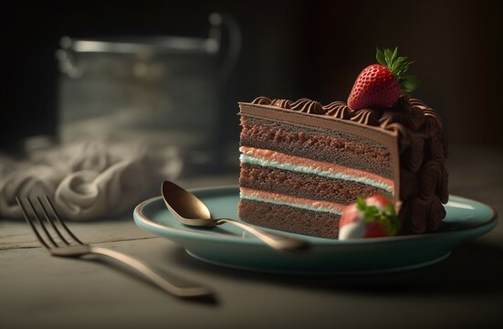

Home Products Aboutus Contacts
Embracing Flavorful Moments: Discover Sweet Cakes Deligths
Welcome to the savory world of Sweet Cakes, where every bite tells a tale of passion, quality, and culinary excellence.
Our journey began with a simple yet profound belief: great food can bring people together, create unforgettable memories, and add a dash of joy to every moment.
As you step into the culinary universe of Sweet Cakes Delights, prepare to embark on a delectable adventure that transcends taste buds and celebrates the art of good living.
At Sweet Cakes Delights, we take pride in the meticulous craftsmanship that goes into creating our culinary delights.
From the finest ingredients sourced globally to our skilled chefs who infuse their creativity into every recipe,
each product is a testament to our commitment to excellence. Whether it's our signature gourmet snacks,
artisanal sauces, or irresistible confections, you'll find that each item is crafted with precision and love.
